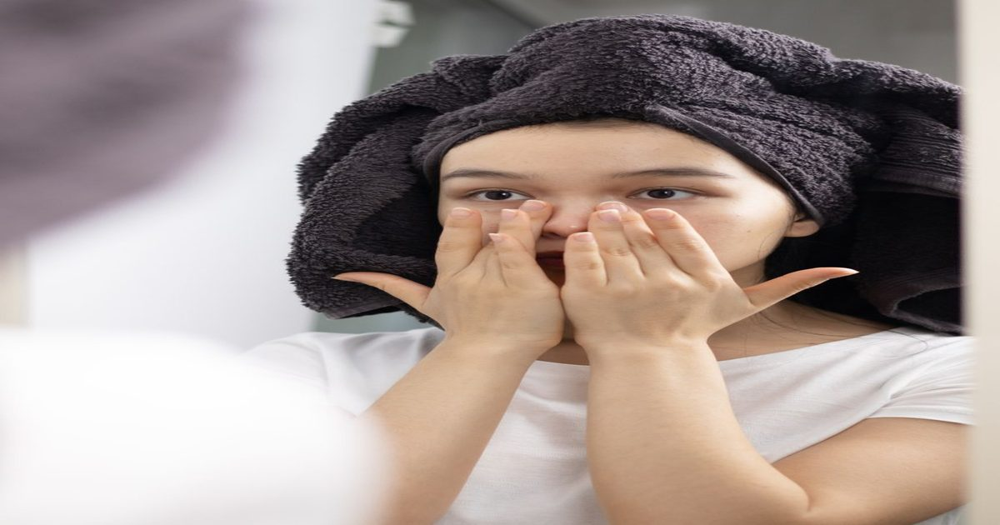

Супрамолекулярная салициловая кислота и импульсные технологии при розацее: что изучали ученые
В журнале Journal of Cosmetic Dermatology опубликовано исследование, посвященное сочетанию супрамолекулярной салициловой кислоты и технологии оптимальных импульсов для терапии розацеа. Работа выполнена в формате проспективного рандомизированного контролируемого испытания с дополнительным анализом в живой модели, что позволяет оценить безопасность и механизмы действия подхода. Результаты могут уточнить протоколы ухода за чувствительной кожей с сосудистыми проявлениями.
Особенности супрамолекулярной формы салициловой кислоты
Супрамолекулярная химия позволяет модифицировать поведение известных веществ, не меняя их базовую структуру. В случае с салициловой кислотой формирование комплексов с носителями меняет растворимость, скорость проникновения и раздражающий потенциал. Для кожи с розацеа, где барьерная функция нарушена, а воспаление поддерживается микрозистом, снижение токсичности при сохранении кератолитического и противовоспалительного эффекта становится ключевым требованием.
Классическая салициловая кислота в свободной форме часто вызывает жжение, сухость и усиление эритемы на стадии обострения. Супрамолекулярная оболочка может действовать как депо, выпуская активное вещество постепенно в роговой слой. Такой подход теоретически снижает риск раздражения контактного типа и позволяет использовать препарат в комбинации с аппаратными методами без длительного периода привыкания.
Кроме того, изменение физико-химических свойств влияет на взаимодействие с липидным мантием и микробиомом кожи. Розацеа ассоциируется с дисбалансом демодекса и изменением pH поверхности. Контролируемая доставка салицилата может способствовать нормализации кератинизации фолликулярного прохода без агрессивного растворения межклеточного цемента, что важно для поддержания ремиссии.

Роль технологии оптимальных импульсов в работе с сосудистой компонентой
Под технологией оптимальных импульсов обычно понимают модулированные параметры световой или лазерной энергии, подбираемые под хромофор оксигемоглобина. В отличие от классических длинных импульсов, такие режимы позволяют селективно нагревать расширенные капилляры и телангиэктазии, минимизируя тепловое повреждение окружающей дермы. Это критично при розацее, где сосудистая стенка хрупка, а воспалительный каскад легко запускается перегревом.
Оптимизация длительности импульса, пауз между микроимпульсами и энергетической плотности направлена на достижение термокоагуляции сосуда без пуруры и ожогов. В контексте исследования сочетание с топическим средством предполагает синергию: кислота готовит эпидермис, улучшает проникновение энергии за счет легкой эксфолиации рогового слоя, а импульсная технология устраняет видимую сосудистую сеть. Такой последовательный или одновременный протокол требует строгой калибровки параметров.
Исследование в живой модели, упомянутое в описании, вероятно, включало оценку гистологических маркеров воспаления, плотности сосудов и параметров барьера после процедур. Понимание того, как тепловое воздействие модулирует экспрессию цитокинов и ангиогенез при одновременном применении салицилатного комплекса, позволяет выстроить доказательную базу для комбинированных схем, исключающих эмпирический подбор параметров у каждого пациента.

Методология рандомизированного контролируемого испытания и вопросы к практике
Проспективный рандомизированный контролируемый дизайн остается золотым стандартом доказательной дерматологии, позволяя изолировать эффект конкретного интервенции от плацебо и естественного течения заболевания. В данном случае сравнение группы, получающей комбинацию, с контрольными группами (монократное применение кислоты, только импульсная терапия, плацебо) дает понимание аддитивности или синергии эффектов. Отсутствие слепоты у пациента при аппаратных методах компенсируется объективными инструментальными методами оценки.
Включение в протокол измерений в живой модели — например, дерматоскопии, конфокальной микроскопии или спектрофотометрии — переводит оценку из субъективной шкалы в плоскость количественных изменений: индекс эритемы, толщина эпидермиса, плотность капиллярных петель. Такие данные необходимы для обоснования частоты сеансов, концентрации активного вещества в комплексе и энергетических настроек прибора для разных фенотипов розацеа.
Для практикующего косметолога или дерматолога ключевыми остаются вопросы переносимости схемы у пациентов с высокой сенсорической реактивностью, риска постинфляматорной пигментации при более темных фототипах кожи и долговестимости ремиссии после завершения курса. Публикация полного текста с протоколом неблагоприятных событий и критериями исключения позволит оценить применимость методики в рутинной работе за пределами клинического исследования.
Коротко: Исследование исследует сочетание модифицированной салициловой кислоты и точной импульсной терапии при розацее по стандартам доказательной медицины. Результаты помогут понять, как снизить раздражающий потенциал кислот и усилить сосудистый эффект приборов. Ждем полного текста для оценки протоколов безопасности.
Какие комбинации кислот и приборных методов вы считаете наиболее перспективными для работы с куперозом и розацеа?